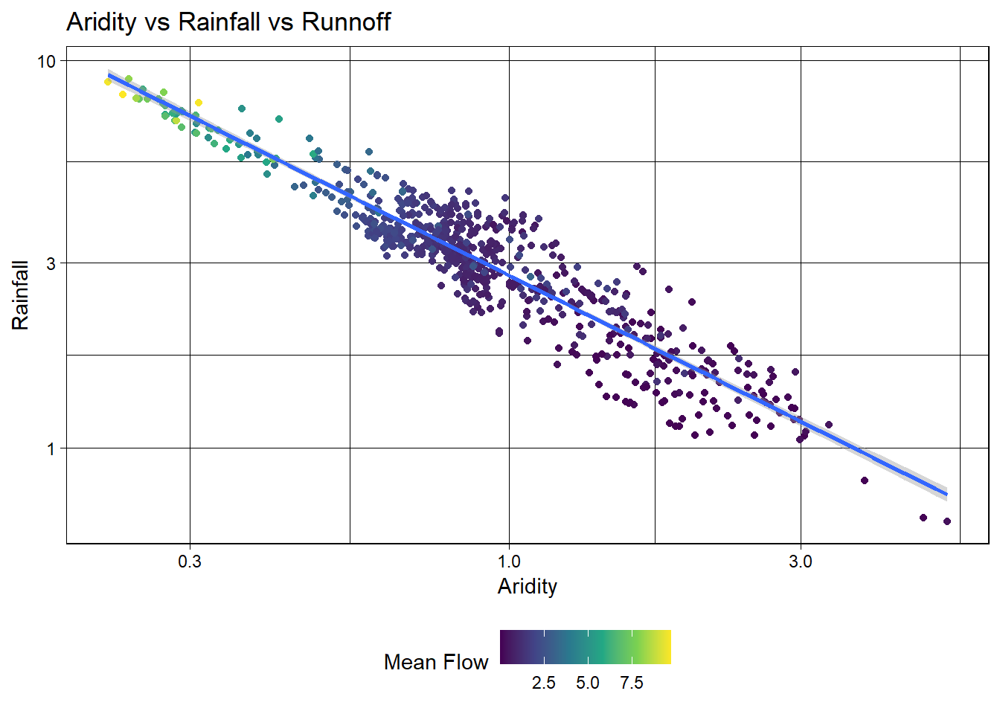

Warning: package 'powerjoin' was built under R version 4.4.3
library(glue)
Warning: package 'glue' was built under R version 4.4.3
library(vip)
Warning: package 'vip' was built under R version 4.4.3
Attaching package: 'vip'
The following object is masked from 'package:utils':
vi
library(baguette)
Warning: package 'baguette' was built under R version 4.4.3
#Downloading PDF and data
root <-'https://gdex.ucar.edu/dataset/camels/file'download.file('https://gdex.ucar.edu/dataset/camels/file/camels_attributes_v2.0.pdf', 'data/camels_attributes_v2.0.pdf')types <-c("clim", "geol", "soil", "topo", "vege", "hydro")# Where the files live online ...remote_files <-glue('{root}/camels_{types}.txt')# where we want to download the data ...local_files <-glue('data/camels_{types}.txt')walk2(remote_files, local_files, download.file, quiet =TRUE)# Read and merge datacamels <-map(local_files, read_delim, show_col_types =FALSE) camels <-power_full_join(camels ,by ='gauge_id')
#Question 1
#zero_q_freq represents the frequency of days with Q=0 mm/day, reported as a percentage##Exploratory data analysisggplot(data = camels, aes(x = gauge_lon, y = gauge_lat)) +borders("state", colour ="gray50") +geom_point(aes(color = q_mean)) +scale_color_gradient(low ="pink", high ="dodgerblue") + ggthemes::theme_map()
#Question 2
#Map 1 for aridity map_aridity <-ggplot(data = camels, aes(x = gauge_lon, y = gauge_lat)) +borders("state", colour ="gray50") +geom_point(aes(color = aridity)) +scale_color_gradient(low ="cornsilk", high ="red4") + ggthemes::theme_map() +labs(title ="Aridity")#Map 2 for p_meanmap_p_mean <-ggplot(data = camels, aes(x = gauge_lon, y = gauge_lat)) +borders("state", colour ="gray50") +geom_point(aes(color = p_mean)) +scale_color_gradient(low ="lightblue2", high ="darkblue") + ggthemes::theme_map() +labs(title ="Mean Daily Precipitation")library(patchwork)map_aridity + map_p_mean
# Create a scatter plot of aridity vs rainfallggplot(camels, aes(x = aridity, y = p_mean)) +# Add points colored by mean flowgeom_point(aes(color = q_mean)) +# Add a linear regression linegeom_smooth(method ="lm", color ="red", linetype =2) +# Apply the viridis color scalescale_color_viridis_c() +# Add a title, axis labels, and theme (w/ legend on the bottom)theme_linedraw() +theme(legend.position ="bottom") +labs(title ="Aridity vs Rainfall vs Runnoff", x ="Aridity", y ="Rainfall",color ="Mean Flow")
`geom_smooth()` using formula = 'y ~ x'
ggplot(camels, aes(x = aridity, y = p_mean)) +geom_point(aes(color = q_mean)) +geom_smooth(method ="lm") +scale_color_viridis_c() +# Apply log transformations to the x and y axesscale_x_log10() +scale_y_log10() +theme_linedraw() +theme(legend.position ="bottom") +labs(title ="Aridity vs Rainfall vs Runnoff", x ="Aridity", y ="Rainfall",color ="Mean Flow")
`geom_smooth()` using formula = 'y ~ x'

ggplot(camels, aes(x = aridity, y = p_mean)) +geom_point(aes(color = q_mean)) +geom_smooth(method ="lm") +# Apply a log transformation to the color scalescale_color_viridis_c(trans ="log") +scale_x_log10() +scale_y_log10() +theme_linedraw() +theme(legend.position ="bottom",# Expand the legend width ...legend.key.width =unit(2.5, "cm"),legend.key.height =unit(.5, "cm")) +labs(title ="Aridity vs Rainfall vs Runnoff", x ="Aridity", y ="Rainfall",color ="Mean Flow")
`geom_smooth()` using formula = 'y ~ x'
#Model Building
set.seed(123)camels <- camels |>mutate(logQmean =log(q_mean))# Generate the splitcamels_split <-initial_split(camels, prop =0.8)camels_train <-training(camels_split)camels_test <-testing(camels_split)camels_cv <-vfold_cv(camels_train, v =10)# Create a recipe to preprocess the datarec <-recipe(logQmean ~ aridity + p_mean, data = camels_train) %>%# Log transform the predictor variables (aridity and p_mean)step_log(all_predictors()) %>%step_interact(terms =~ aridity:p_mean) |>step_naomit(all_predictors(), all_outcomes())# Prepare the databaked_data <-prep(rec, camels_train) |>bake(new_data =NULL)lm_base <-lm(logQmean ~ aridity * p_mean, data = baked_data)summary(lm_base)
Call:
lm(formula = logQmean ~ aridity * p_mean, data = baked_data)
Residuals:
Min 1Q Median 3Q Max
-2.91162 -0.21601 -0.00716 0.21230 2.85706
Coefficients:
Estimate Std. Error t value Pr(>|t|)
(Intercept) -1.77586 0.16365 -10.852 < 2e-16 ***
aridity -0.88397 0.16145 -5.475 6.75e-08 ***
p_mean 1.48438 0.15511 9.570 < 2e-16 ***
aridity:p_mean 0.10484 0.07198 1.457 0.146
---
Signif. codes: 0 '***' 0.001 '**' 0.01 '*' 0.05 '.' 0.1 ' ' 1
Residual standard error: 0.5696 on 531 degrees of freedom
Multiple R-squared: 0.7697, Adjusted R-squared: 0.7684
F-statistic: 591.6 on 3 and 531 DF, p-value: < 2.2e-16
summary(lm(logQmean ~ aridity + p_mean + aridity_x_p_mean, data = baked_data))
Call:
lm(formula = logQmean ~ aridity + p_mean + aridity_x_p_mean,
data = baked_data)
Residuals:
Min 1Q Median 3Q Max
-2.91162 -0.21601 -0.00716 0.21230 2.85706
Coefficients:
Estimate Std. Error t value Pr(>|t|)
(Intercept) -1.77586 0.16365 -10.852 < 2e-16 ***
aridity -0.88397 0.16145 -5.475 6.75e-08 ***
p_mean 1.48438 0.15511 9.570 < 2e-16 ***
aridity_x_p_mean 0.10484 0.07198 1.457 0.146
---
Signif. codes: 0 '***' 0.001 '**' 0.01 '*' 0.05 '.' 0.1 ' ' 1
Residual standard error: 0.5696 on 531 degrees of freedom
Multiple R-squared: 0.7697, Adjusted R-squared: 0.7684
F-statistic: 591.6 on 3 and 531 DF, p-value: < 2.2e-16
metrics(test_data, truth = logQmean, estimate = lm_pred)
# A tibble: 3 × 3
.metric .estimator .estimate
<chr> <chr> <dbl>
1 rmse standard 0.583
2 rsq standard 0.742
3 mae standard 0.390
ggplot(test_data, aes(x = logQmean, y = lm_pred, colour = aridity)) +# Apply a gradient color scalescale_color_gradient2(low ="brown", mid ="orange", high ="darkgreen") +geom_point() +geom_abline(linetype =2) +theme_linedraw() +labs(title ="Linear Model: Observed vs Predicted",x ="Observed Log Mean Flow",y ="Predicted Log Mean Flow",color ="Aridity")
#Using a workflow
# Define modellm_model <-linear_reg() %>%# define the engineset_engine("lm") %>%# define the modeset_mode("regression")# Instantiate a workflow ...lm_wf <-workflow() %>%# Add the recipeadd_recipe(rec) %>%# Add the modeladd_model(lm_model) %>%# Fit the model to the training datafit(data = camels_train) # Extract the model coefficients from the workflowsummary(extract_fit_engine(lm_wf))$coefficients
#ANSWER: Based on the results of each model and the corresponding R-squared values, neural network is the best model to move forward with. This is because neural network has the 2nd highest R-squared value at 0.551, following linear regression. While linear regression has the highest value at 0.599, as shown previously, the data has a non-linear relationship meaning that neural network is a better model overall.
#Build Your Own ##Data spliting
library(workflows)library(tune)library(rsample)library(yardstick)#remove NA valueslibrary(dplyr)camels_train_clean <- camels_train %>%filter(!is.na(logQmean))sum(is.na(camels_train_clean$logQmean))
[1] 0
set.seed(123)# Bad form to perform simple transformations on the outcome variable within a # recipe. So, we'll do it here.camels <- camels |>mutate(logQmean =log(q_mean))# Generate the splitcamels_split <-initial_split(camels_train_clean, prop =0.8)camels_train <-training(camels_split)camels_test <-testing(camels_split)#Cross validationcamels_cv <-vfold_cv(camels_train, v =10)
#Why this formula?#I am choosing this formula because each of these factors can have a significant impact on stream flow. For example, rainfall is the primary input of new stream flow within a watershed and aridity mean that stream flow is less likely. Both elevation and slope can contribute to how much runoff there is in an area, ultimately impacting stream flow. #Reciperec <-recipe(logQmean ~ p_mean + elev_mean + slope_mean + aridity + runoff_ratio, data = camels_train) %>%step_normalize(all_numeric(), -all_outcomes()) %>%step_impute_median(all_numeric(), -all_outcomes())
#ANSWER: Based on the results, the rand_forest model is the best because it has the highest r-squared value at 0.988
##Extract and Evaluate
library(ggplot2)#Build modelrf_model <-rand_forest(mode ="regression", trees =500, mtry =3, min_n =10) %>%set_engine("ranger")#Define reciperec <-recipe(logQmean ~ p_mean + elev_mean + slope_mean + aridity + runoff_ratio, data = camels_train) %>%step_normalize(all_numeric(), -all_outcomes()) %>%step_impute_median(all_numeric(), -all_outcomes())#Build Workflowworkflow_rf <-workflow() %>%add_model(rf_model) %>%add_recipe(rec)#Fit model to training datarf_fit <-fit(workflow_rf, data = camels_train)#Make prediction on test data using augmentrf_predictions <-augment(rf_fit, new_data = camels_test)#Plot observed vs predictedggplot(rf_predictions, aes(x = logQmean, y = .pred)) +geom_point(color ="blue", alpha =0.6) +# Blue points for observed vs predictedgeom_abline(slope =1, intercept =0, color ="red", linetype ="dashed") +# Identity linelabs(title ="Observed vs Predicted Streamflow (logQmean)",x ="Observed Streamflow (logQmean)",y ="Predicted Streamflow (logQmean)" ) +theme_minimal() +scale_color_viridis_c()
#Description of results#Based on the scatter plot, the data is remaining fairly close to the dashed line, showing that the model's predictions closely align with the actual observed values. While the points are pretty well distributed, there are the most points from 0.8 to 1. The strong indicator of 0.988 suggests that this is a strong model and that the Random Forest model is performing well. The model explains a significant amount of the variability in the observed stream flow.